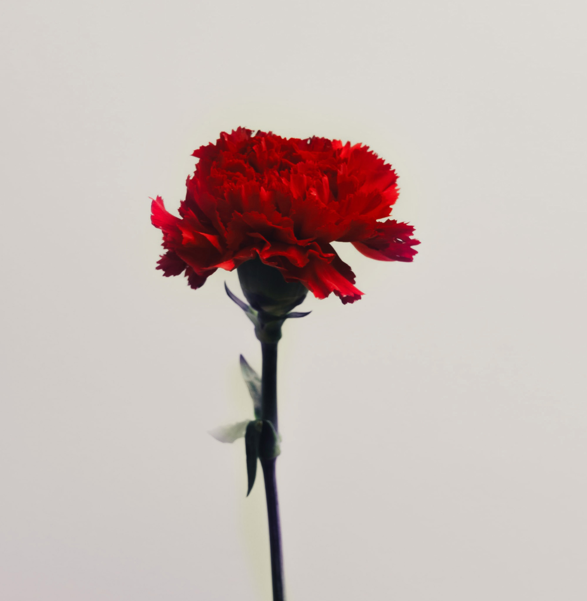

07. CARNATIONS
CARNATION
Dianthus Caryophyllus
When Valentine’s day rolls around, one of the most popular flowers are carnations, the “flower of love.” Carnations have an appealing ruffled appearance and long-lasting fragrance. This flower reflects special meanings such as being distinctive and tender. Carnations embrace love, captivation, and distinction. They also bloom for extended periods, so they are perfect for showing one’s devotion of love, or for lovebirds who are about to tie the knot!
